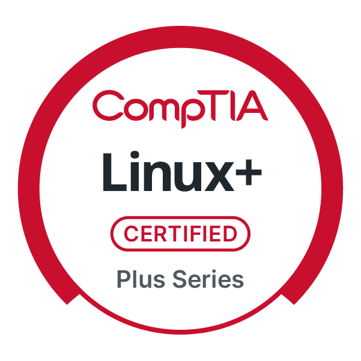
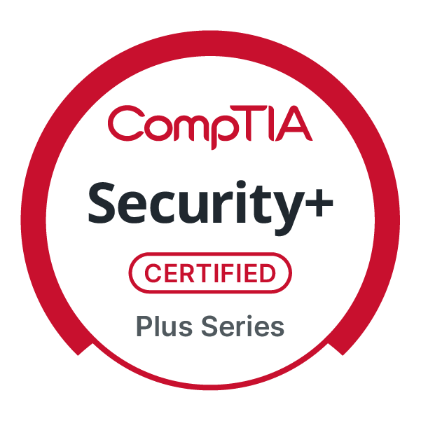
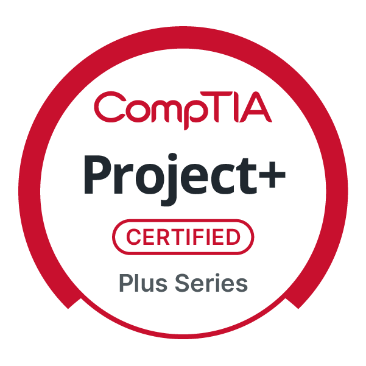
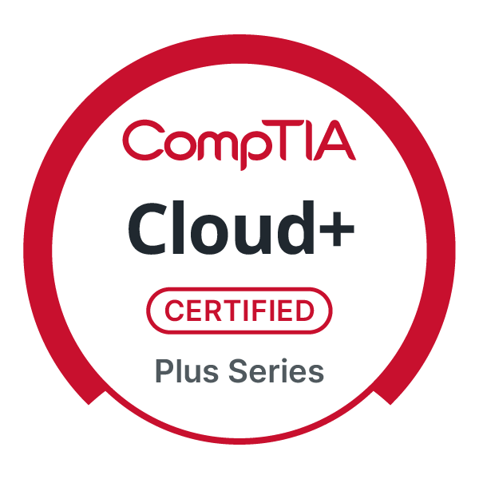
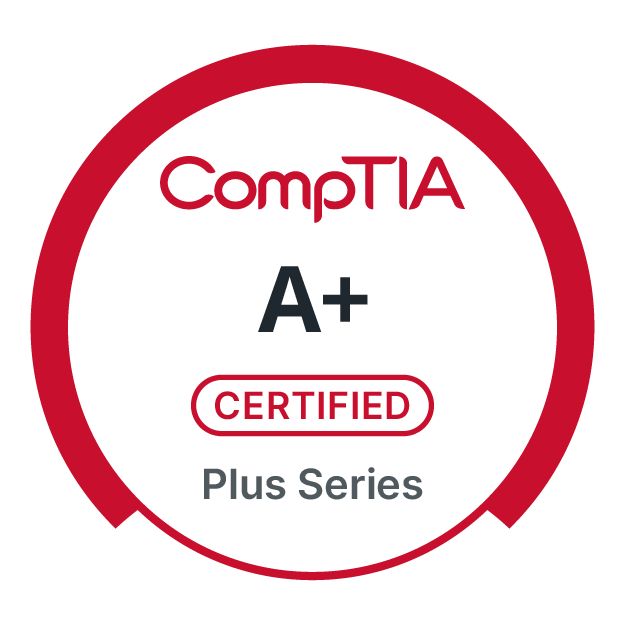

About Me
$ whoami
Senior Systems Engineer with 10 years of total experience in tech and strong knowledge of infrastructure. I love automation and enjoy solving complex technical problems. Builds CI/CD pipelines, manages Kubernetes and containerized services, and enforces STIG/RMF compliance across servers and workstations.
- Bachelor's degree in Cybersecurity and Information Assurance
- Active Secret clearance and DoD 8570 certified
- DevSecOps: secure CI/CD, Kubernetes, and STIG/RMF compliance
- Uses AI tools to assist with coding, automation, and problem-solving
Certifications





Skills
Technical Skills
Expert
Hands-on
Familiar
Work History
Experience
Systems Engineer
- Provide technical support and expert advice for the Joint Staff and their multi-national mission partners.
- Architected and deployed Kubernetes to support the organization's container platform.
- Led the adoption of CI/CD practices to automate and accelerate software delivery across the organization.
- Introduced Infrastructure as Code (IaC) to the organization for provisioning, managing, and hardening infrastructure.
- Implemented DISA Security Technical Implementation Guide (STIG) requirements and maintained systems in accordance with the Risk Management Framework (RMF).
- Implemented and managed Windows-based Public Key Infrastructure (PKI) in a DoD environment, including certificate request generation and certificate installation.
- Coached and mentored teammates on systems engineering, automation, and security practices.
Maritime Operations Center Technician
- Delivered technical support to US Navy and Marine Corps users, including VIP customers.
- Performed repairs, upgrades, patching, and full system configuration.
- Responded promptly to high-priority trouble tickets while meeting service level agreement (SLA) targets.
- Developed PowerShell scripts to resolve end-user issues and automate routine tasks, improving productivity.
- Diagnosed hardware and software issues, identifying root causes to achieve complete problem resolution.
- Collaborated with the team in meetings to shape and improve the strategy for delivering exceptional customer service.
Information Technology Specialist
- Monitored, upgraded, and maintained highly available servers and business applications, including Domain Controllers, Hyper-V, file and print servers, DNS, DHCP, PBX, VPN, and web servers.
- Partnered with the team to design IT infrastructure and deliver solutions for the company.
- Configured and managed network devices and security appliances.
- Provided on-site and remote support to end users, including managers and C-level executives.
- Managed user permissions, distribution lists, and security groups in Active Directory and Microsoft Office 365.
Education
2020
Western Governors University
Bachelor of Science: Cybersecurity and Information Assurance
2012 - 2017
Tidewater Community College
Associate of Applied Science: Information System Technology (Magna Cum Laude)
Certifications
-
Microsoft Certified Solutions Associate (MCSA) Windows Server 2016
-
CompTIA Linux+
-
CompTIA Security+
-
CompTIA Project+
-
CompTIA Cloud+
-
CompTIA A+
Testimonials
What People Say
“Even though this is only a six-month reporting period, Sherwin has quickly grasped the many technical facets associated with managing and maintain nine networks supporting Joint and Multi-national partners and is the lead administrator for two of the nine networks. He has met every dynamic challenge with professionalism, dedication, and expertise. He has excellent customer interaction skills and quickly resolves issues as they come up. I value his technical experience and knowledge and rely on his advice when addressing the many challenges associated with this contract. He has my complete trust. As our team moves forward into new technical domains associated with systems architecture/engineering and cloud technology, I will rely on Sherwin to continue expanding his professional knowledge and provide expert advice and leadership to the team and the customer as we move forward.” — Timothy Kalvoda, Project Manager and Engineering team lead at GDIT
“I enjoyed my time working with Sherwin and came to know him as an invaluable asset to any team. He is intelligent, highly-skilled and his work ethic is unparcelled. Beyond that, he is an impressive facilitator who is always a bridge between IT professionals and other business units. His ability to learn new technologies is impressive & his professional curiosity is insatiable. Along with his undeniable talent, Sherwin has always been an absolute joy to work with. He is a true team player, and never shrinks from a challenge. Without a doubt, I confidently recommend Sherwin to join your team. As a dedicated and knowledgeable professional, I know that he will be a beneficial addition to any organization.” — Joseph Jones, Project manager at tegraglobal
Awards
The Hero Award
General Dynamics Information Technology
Magna Cum Laude
Tidewater Community College
Sherwin Frias
Information Technology Professional
I'm looking forward to hearing from you! I'm here to help and answer any questions you have. Please leave a message, and I'll get back to you as soon as possible.